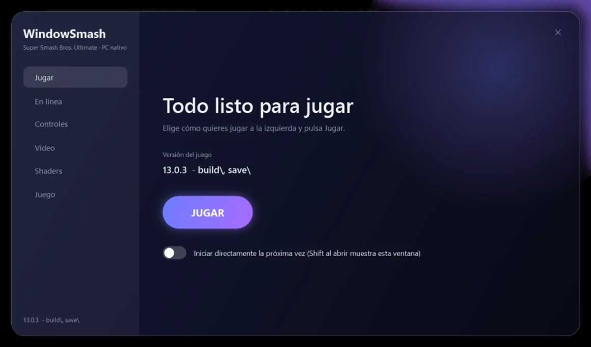
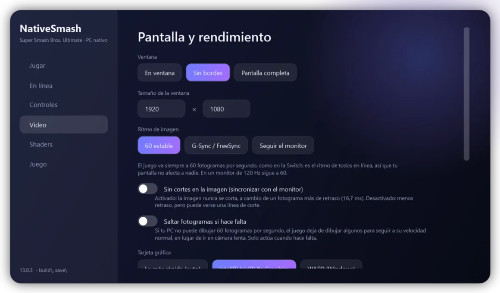
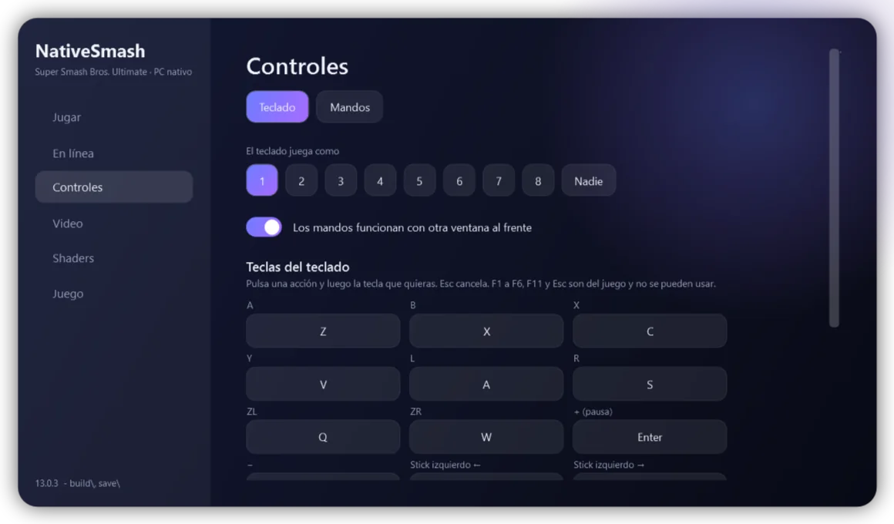
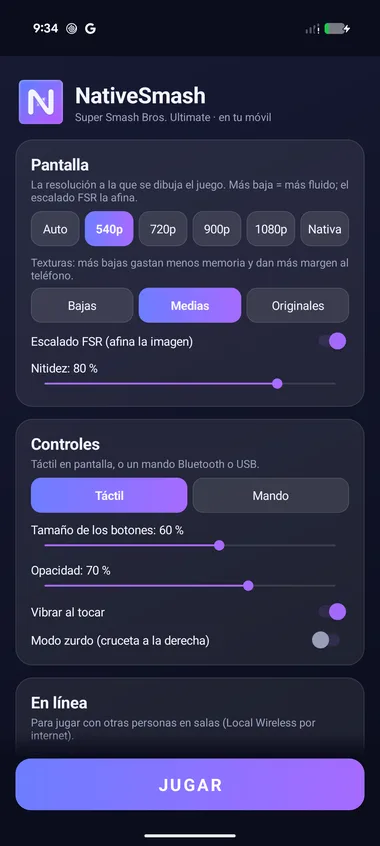
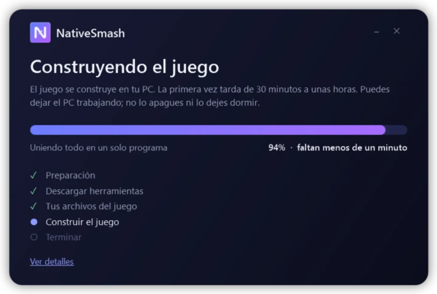

Un launcher modernoA modern launcher
Una sola ventana para jugar, ajustar el video y las salas en línea. Guarda tu configuración.One window to play, set up video and online rooms. It saves your settings.
Super Smash Bros. Ultimate funcionando de forma nativa en tu PC con Windows, construido a partir de tu propia copia del juego. Super Smash Bros. Ultimate running natively on your Windows PC, built from your own copy of the game.
Necesitas tu propia copia de Super Smash Bros. Ultimate, de tu consola. NativeSmash no la incluye.You need your own copy of Super Smash Bros. Ultimate from your console. NativeSmash does not include it.

Lo que ya funciona y lo que viene en camino.What already works and what is on its way.
Una sola ventana para jugar, ajustar el video y las salas en línea. Guarda tu configuración.One window to play, set up video and online rooms. It saves your settings.
Elige cada tecla del teclado desde el launcher: pulsa una acción y luego la tecla. Los mandos funcionan al conectarlos.Pick every keyboard key from the launcher: choose an action, then press the key. Controllers work as soon as they are plugged in.
Los shaders se guardan en disco y se preparan al arrancar, con una barra de carga, para que el juego no se congele.Shaders are kept on disk and prepared at start-up, with a loading bar, so the game does not freeze.
Menús, retratos, el % de daño y los colores se ven bien en gráficas Intel integradas a 60 fps.Menus, portraits, damage % and colours look right on integrated Intel graphics at 60 fps.
FidelityFX Super Resolution 1 de AMD, activable desde el launcher, para más fotogramas en PCs justos o pantallas grandes.AMD FidelityFX Super Resolution 1, switched on from the launcher, for more frames on modest PCs or big screens.
Te pide tu juego, tus claves y tu firmware y te recomienda las versiones que funcionan mejor.It asks for your game, your keys and your firmware, and recommends the versions that work best.
El juego va siempre a 60 fotogramas por segundo, como en la Switch, así que tu pantalla no afecta a nadie en línea. Un interruptor del launcher evita los cortes de imagen. Para 120 Hz, recomendamos un programa externo como Lossless Scaling.The game always runs at 60 frames a second, as on the Switch, so your screen affects nobody online. A launcher switch prevents screen tearing. For 120 Hz, we suggest an outside program such as Lossless Scaling.
El launcher avisa cuando hay una versión nueva y la instala con un clic, sin tocar tus ajustes.The launcher tells you when a new version is out and installs it in one click, without touching your settings.
Elige cómo juega cada mando desde el launcher: estilo, zona muerta, vibración, gatillos y cada botón, pulsándolo en el propio mando.Choose how each controller plays from the launcher: style, dead zone, rumble, triggers and every button, by pressing it on the controller itself.
Arreglamos una fuga de memoria en gráficas Intel y el juego descarga los shaders que no usa: ya no se ralentiza con el paso del tiempo.We fixed a memory leak on Intel graphics and the game lets go of the shaders it is not using: it no longer slows down as time goes by.
Un monitor opcional mide cada segundo los fotogramas, el procesador, la memoria y la gráfica, para encontrar qué frena el juego en tu PC.An optional monitor measures the frames, the processor, the memory and the graphics card every second, to find what slows the game down on your PC.
Automática, Alta, Media o Baja: en un PC con poca RAM las texturas ocupan menos y el juego va más desahogado.Automatic, High, Medium or Low: on a PC with little RAM the textures take less and the game breathes easier.
Elige el tamaño de la ventana, el ritmo de imagen y la tarjeta gráfica. Cada cambio se guarda solo cuando le das a Jugar.Pick the window size, frame pacing and graphics card. Each change is saved only when you press Play.

Pulsa una acción, luego la tecla que quieras. Si repites una tecla, la otra acción la suelta. Las teclas del propio juego (Esc, F1 a F6 y F11) quedan protegidas.Pick an action, then the key you want. If you reuse a key, the other action lets it go. The game's own keys (Esc, F1 to F6 and F11) are protected.

Lo que trae cada versión, leído directamente de GitHub.What each version brings, read straight from GitHub.
Cargando las novedades…Loading what's new…
Ver todas las versiones en GitHubSee every version on GitHub
Un experimento: el mismo juego, construido a partir de tu propia copia, corriendo en un teléfono. Todavía no es algo que puedas instalar.An experiment: the same game, built from your own copy, running on a phone. It is not something you can install yet.

El código está en GitHub y las notas técnicas, en docs/ANDROID.md. iPhone: aún no.The code is on GitHub and the technical notes are in docs/ANDROID.md. iPhone: not yet.
NativeSmash se construye en tu PC con tus propios archivos. Nada del juego viaja con el programa.NativeSmash is built on your PC from your own files. Nothing of the game ships with the program.

Nada de ventanas negras: una sola ventana con una barra de progreso, el tiempo que falta y los pasos que van haciéndose.No black windows: one window with a progress bar, the time left and the steps as they happen.
Requisitos: Windows 10 u 11 de 64 bits, una tarjeta gráfica compatible con Direct3D 11 y, mejor, 8 GB de memoria o más. Para jugar en línea todos deben tener la misma versión del juego.Requirements: 64-bit Windows 10 or 11, a Direct3D 11 graphics card and, ideally, 8 GB of memory or more. To play online everyone needs the same game version.